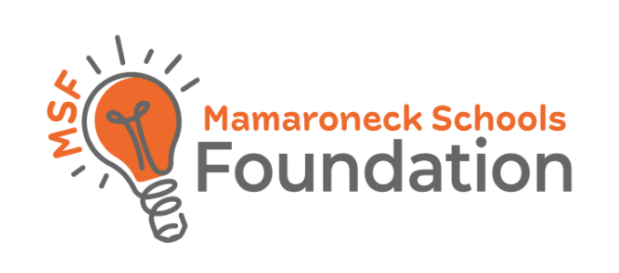

The MSF Grant & The Golf Simulator
A first-of-its-kind indoor golf simulator, built to give every student year-round access to the game.
$25,000 to Build Something New
In 2025, Finding FairWays was approved for a $15,000 grant from the Mamaroneck Schools Foundation — the largest grant in MSF's history — along with an additional $10,000 from the athletic department.
Over the following year we worked with vendors and partnered with brands including Foresight Sports and Bushnell to design and install a first-of-its-kind golf simulator at the Post Road gym. The system features an enclosure that lowers and transforms down from the ceiling, housing two full hitting bays when in use.
We cut the ribbon in June 2026, capping off a process that began with approval in 2025 and carried through construction into 2026. The simulator gives our whole athletic program — not just Finding FairWays — year-round access to golf practice no matter the weather or season.

How the Grant Came Together
Initial grant request submitted to the Mamaroneck Schools Foundation.
Grant proposal reviewed by the foundation board.
Grant approved for funding. Equipment ordered and delivery scheduled. Hardware installation completed at the Post Road gym.
Calibration, software setup, and bay build-out completed.
Ribbon cutting held — simulator officially in use by the golf teams and Finding FairWays.
Built for the Whole Program
Varsity Golf Teams
Boys' and girls' varsity golf practice and train here year round, including the off-season and during bad weather, with equal access for both programs.
Finding FairWays
The program uses the simulator as a core part of its coaching and outreach work with middle school students.
PE Classes
Physical education classes at the high school are planned to get hands-on golf instruction using the same setup down the line.
Future PlanHoused at the Post Road gym at Mamaroneck High School, the simulator's enclosure lowers down from the ceiling when in use and retracts back up when not needed, so the gym stays flexible for other activities and sports.
Setup Video
A look at how the simulator came together at the Post Road gym.
Girls Golf Field Day & Ribbon Cutting
Finding FairWays held a field day and ribbon cutting ceremony to celebrate the new golf simulator at the Post Road gym, with members of the Mamaroneck Schools Foundation joining school administrators, coaches, and student athletes for the event — part of a broader push to grow interest in the girls varsity golf program.